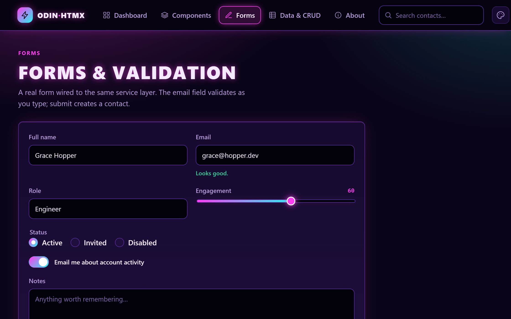

odin-htmx.alexh95.com

Click.
The server answers in HTML.
Type.
Validation runs on the server.
Re-skin.
6 styles, 23 schemes, 0 requests.
WIRE
response bodies, bytes of HTML
GET
/data
0
B
<!doctype html>
the whole page, swapped in by hx-boost
GET
/contacts/1
0
B
<div class="backdrop" …><aside class="drawer drawer-detail"
…
POST
/validate/email
0
B
<span class="msg msg-err">
That doesn't look like an email.
</span>
POST
/validate/email
0
B
<span class="msg msg-ok">
Looks good.
</span>
—
no request
0
B
<html data-style="skeuo">
set in the browser
<html data-style="terminal">
set in the browser
<html data-style="brutal">
set in the browser
<html data-style="editorial">
set in the browser
<html data-style="arcade">
set in the browser